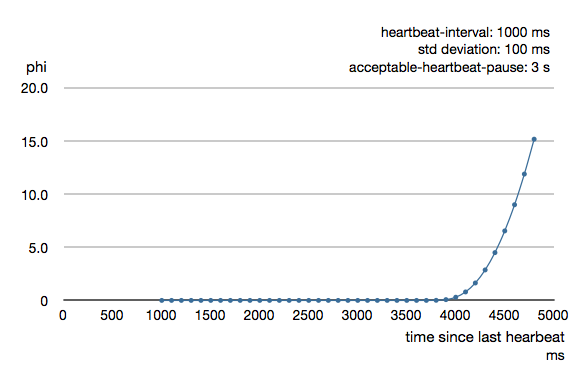

Remoting
For an introduction of remoting capabilities of Akka please see Location Transparency.
Note
As explained in that chapter Akka remoting is designed for communication in a peer-to-peer fashion and it has limitations for client-server setups. In particular Akka Remoting does not work transparently with Network Address Translation, Load Balancers, or in Docker containers. For symmetric communication in these situations network and/or Akka configuration will have to be changed as described in Akka behind NAT or in a Docker container.
Preparing your ActorSystem for Remoting
The Akka remoting is a separate jar file. Make sure that you have the following dependency in your project:
"com.typesafe.akka" %% "akka-remote" % "2.4.11"
To enable remote capabilities in your Akka project you should, at a minimum, add the following changes to your application.conf file:
akka {
actor {
provider = remote
}
remote {
enabled-transports = ["akka.remote.netty.tcp"]
netty.tcp {
hostname = "127.0.0.1"
port = 2552
}
}
}
As you can see in the example above there are four things you need to add to get started:
- Change provider from local to remote
- Add host name - the machine you want to run the actor system on; this host name is exactly what is passed to remote systems in order to identify this system and consequently used for connecting back to this system if need be, hence set it to a reachable IP address or resolvable name in case you want to communicate across the network.
- Add port number - the port the actor system should listen on, set to 0 to have it chosen automatically
Note
The port number needs to be unique for each actor system on the same machine even if the actor systems have different names. This is because each actor system has its own networking subsystem listening for connections and handling messages as not to interfere with other actor systems.
The example above only illustrates the bare minimum of properties you have to add to enable remoting. All settings are described in Remote Configuration.
Types of Remote Interaction
Akka has two ways of using remoting:
- Lookup : used to look up an actor on a remote node with actorSelection(path)
- Creation : used to create an actor on a remote node with actorOf(Props(...), actorName)
In the next sections the two alternatives are described in detail.
Looking up Remote Actors
actorSelection(path) will obtain an ActorSelection to an Actor on a remote node, e.g.:
val selection =
context.actorSelection("akka.tcp://actorSystemName@10.0.0.1:2552/user/actorName")
As you can see from the example above the following pattern is used to find an actor on a remote node:
akka.<protocol>://<actor system>@<hostname>:<port>/<actor path>
Once you obtained a selection to the actor you can interact with it in the same way you would with a local actor, e.g.:
selection ! "Pretty awesome feature"
To acquire an ActorRef for an ActorSelection you need to send a message to the selection and use the sender reference of the reply from the actor. There is a built-in Identify message that all Actors will understand and automatically reply to with a ActorIdentity message containing the ActorRef. This can also be done with the resolveOne method of the ActorSelection, which returns a Future of the matching ActorRef.
Note
For more details on how actor addresses and paths are formed and used, please refer to Actor References, Paths and Addresses.
Note
Message sends to actors that are actually in the sending actor system do not get delivered via the remote actor ref provider. They're delivered directly, by the local actor ref provider.
Aside from providing better performance, this also means that if the hostname you configure remoting to listen as cannot actually be resolved from within the very same actor system, such messages will (perhaps counterintuitively) be delivered just fine.
Creating Actors Remotely
If you want to use the creation functionality in Akka remoting you have to further amend the application.conf file in the following way (only showing deployment section):
akka {
actor {
deployment {
/sampleActor {
remote = "akka.tcp://sampleActorSystem@127.0.0.1:2553"
}
}
}
}
The configuration above instructs Akka to react when an actor with path /sampleActor is created, i.e. using system.actorOf(Props(...), "sampleActor"). This specific actor will not be directly instantiated, but instead the remote daemon of the remote system will be asked to create the actor, which in this sample corresponds to sampleActorSystem@127.0.0.1:2553.
Once you have configured the properties above you would do the following in code:
val actor = system.actorOf(Props[SampleActor], "sampleActor")
actor ! "Pretty slick"
The actor class SampleActor has to be available to the runtimes using it, i.e. the classloader of the actor systems has to have a JAR containing the class.
Note
In order to ensure serializability of Props when passing constructor arguments to the actor being created, do not make the factory an inner class: this will inherently capture a reference to its enclosing object, which in most cases is not serializable. It is best to create a factory method in the companion object of the actor’s class.
Serializability of all Props can be tested by setting the configuration item akka.actor.serialize-creators=on. Only Props whose deploy has LocalScope are exempt from this check.
Note
You can use asterisks as wildcard matches for the actor paths, so you could specify: /*/sampleActor and that would match all sampleActor on that level in the hierarchy. You can also use wildcard in the last position to match all actors at a certain level: /someParent/*. Non-wildcard matches always have higher priority to match than wildcards, so: /foo/bar is considered more specific than /foo/* and only the highest priority match is used. Please note that it cannot be used to partially match section, like this: /foo*/bar, /f*o/bar etc.
Programmatic Remote Deployment
To allow dynamically deployed systems, it is also possible to include deployment configuration in the Props which are used to create an actor: this information is the equivalent of a deployment section from the configuration file, and if both are given, the external configuration takes precedence.
With these imports:
import akka.actor.{ Props, Deploy, Address, AddressFromURIString }
import akka.remote.RemoteScope
and a remote address like this:
val one = AddressFromURIString("akka.tcp://sys@host:1234")
val two = Address("akka.tcp", "sys", "host", 1234) // this gives the same
you can advise the system to create a child on that remote node like so:
val ref = system.actorOf(Props[SampleActor].
withDeploy(Deploy(scope = RemoteScope(address))))
Lifecycle and Failure Recovery Model

Each link with a remote system can be in one of the four states as illustrated above. Before any communication happens with a remote system at a given Address the state of the association is Idle. The first time a message is attempted to be sent to the remote system or an inbound connection is accepted the state of the link transitions to Active denoting that the two systems has messages to send or receive and no failures were encountered so far. When a communication failure happens and the connection is lost between the two systems the link becomes Gated.
In this state the system will not attempt to connect to the remote host and all outbound messages will be dropped. The time while the link is in the Gated state is controlled by the setting akka.remote.retry-gate-closed-for: after this time elapses the link state transitions to Idle again. Gate is one-sided in the sense that whenever a successful inbound connection is accepted from a remote system during Gate it automatically transitions to Active and communication resumes immediately.
In the face of communication failures that are unrecoverable because the state of the participating systems are inconsistent, the remote system becomes Quarantined. Unlike Gate, quarantining is permanent and lasts until one of the systems is restarted. After a restart communication can be resumed again and the link can become Active again.
Watching Remote Actors
Watching a remote actor is not different than watching a local actor, as described in Lifecycle Monitoring aka DeathWatch.
Failure Detector
Under the hood remote death watch uses heartbeat messages and a failure detector to generate Terminated message from network failures and JVM crashes, in addition to graceful termination of watched actor.
The heartbeat arrival times is interpreted by an implementation of The Phi Accrual Failure Detector.
The suspicion level of failure is given by a value called phi. The basic idea of the phi failure detector is to express the value of phi on a scale that is dynamically adjusted to reflect current network conditions.
The value of phi is calculated as:
phi = -log10(1 - F(timeSinceLastHeartbeat))
where F is the cumulative distribution function of a normal distribution with mean and standard deviation estimated from historical heartbeat inter-arrival times.
In the Remote Configuration you can adjust the akka.remote.watch-failure-detector.threshold to define when a phi value is considered to be a failure.
A low threshold is prone to generate many false positives but ensures a quick detection in the event of a real crash. Conversely, a high threshold generates fewer mistakes but needs more time to detect actual crashes. The default threshold is 10 and is appropriate for most situations. However in cloud environments, such as Amazon EC2, the value could be increased to 12 in order to account for network issues that sometimes occur on such platforms.
The following chart illustrates how phi increase with increasing time since the previous heartbeat.

Phi is calculated from the mean and standard deviation of historical inter arrival times. The previous chart is an example for standard deviation of 200 ms. If the heartbeats arrive with less deviation the curve becomes steeper, i.e. it is possible to determine failure more quickly. The curve looks like this for a standard deviation of 100 ms.

To be able to survive sudden abnormalities, such as garbage collection pauses and transient network failures the failure detector is configured with a margin, akka.remote.watch-failure-detector.acceptable-heartbeat-pause. You may want to adjust the Remote Configuration of this depending on you environment. This is how the curve looks like for acceptable-heartbeat-pause configured to 3 seconds.
Serialization
When using remoting for actors you must ensure that the props and messages used for those actors are serializable. Failing to do so will cause the system to behave in an unintended way.
For more information please see Serialization.
Disabling the Java Serializer
Since the 2.4.11 release of Akka it is possible to entirely disable the default Java Serialization mechanism. Please note that new remoting implementation (codename Artery) does not use Java serialization for internal messages by default. For compatibility reasons, the current remoting still uses Java serialization for some classes, however you can disable it in this remoting implementation as well by following the steps below.
Java serialization is known to be slow and prone to attacks of various kinds - it never was designed for high throughput messaging after all. However it is very convenient to use, thus it remained the default serialization mechanism that Akka used to serialize user messages as well as some of its internal messages in previous versions. Since the release of Artery, Akka internals do not rely on Java serialization anymore (one exception being java.lang.Throwable).
Note
When using the new remoting implementation (codename Artery), Akka does not use Java Serialization for any of it's internal messages. It is highly encouraged to disable java serialization, so please plan to do so at the earliest possibility you have in your project.
One may think that network bandwidth and latency limit the performance of remote messaging, but serialization is a more typical bottleneck.
For user messages, the default serializer, implemented using Java serialization, remains available and enabled in Artery. We do however recommend to disable it entirely and utilise a proper serialization library instead in order effectively utilise the improved performance and ability for rolling deployments using Artery. Libraries that we recommend to use include, but are not limited to, Kryo by using the akka-kryo-serialization library or Google Protocol Buffers if you want more control over the schema evolution of your messages.
In order to completely disable Java Serialization in your Actor system you need to add the following configuration to your application.conf:
akka {
actor {
serialization-bindings {
"java.io.Serializable" = none
}
}
}
Please note that this means that you will have to configure different serializers which will able to handle all of your remote messages. Please refer to the Serialization documentation as well as ByteBuffer based serialization to learn how to do this.
Warning
Please note that when enabling the additional-serialization-bindings when using the old remoting, you must do so on all nodes participating in a cluster, otherwise the mis-aligned serialization configurations will cause deserialization errors on the receiving nodes.
You can also easily enable additional serialization bindings that are provided by Akka that are not using Java serialization:
The reason these are not enabled by default is wire-level compatibility between any 2.4.x Actor Systems. If you roll out a new cluster, all on the same Akka version that can enable these serializers it is recommended to enable this setting. When using Remoting (codename Artery) these serializers are enabled by default.
Routers with Remote Destinations
It is absolutely feasible to combine remoting with Routing.
A pool of remote deployed routees can be configured as:
akka.actor.deployment {
/parent/remotePool {
router = round-robin-pool
nr-of-instances = 10
target.nodes = ["akka.tcp://app@10.0.0.2:2552", "akka.tcp://app@10.0.0.3:2552"]
}
}
This configuration setting will clone the actor defined in the Props of the remotePool 10 times and deploy it evenly distributed across the two given target nodes.
A group of remote actors can be configured as:
akka.actor.deployment {
/parent/remoteGroup {
router = round-robin-group
routees.paths = [
"akka.tcp://app@10.0.0.1:2552/user/workers/w1",
"akka.tcp://app@10.0.0.2:2552/user/workers/w1",
"akka.tcp://app@10.0.0.3:2552/user/workers/w1"]
}
}
This configuration setting will send messages to the defined remote actor paths. It requires that you create the destination actors on the remote nodes with matching paths. That is not done by the router.
Remoting Sample
There is a more extensive remote example that comes with Lightbend Activator. The tutorial named Akka Remote Samples with Scala demonstrates both remote deployment and look-up of remote actors.
Remote Events
It is possible to listen to events that occur in Akka Remote, and to subscribe/unsubscribe to these events you simply register as listener to the below described types in on the ActorSystem.eventStream.
Note
To subscribe to any remote event, subscribe to RemotingLifecycleEvent. To subscribe to events related only to the lifecycle of associations, subscribe to akka.remote.AssociationEvent.
Note
The use of term "Association" instead of "Connection" reflects that the remoting subsystem may use connectionless transports, but an association similar to transport layer connections is maintained between endpoints by the Akka protocol.
By default an event listener is registered which logs all of the events described below. This default was chosen to help setting up a system, but it is quite common to switch this logging off once that phase of the project is finished.
Note
In order to switch off the logging, set akka.remote.log-remote-lifecycle-events = off in your application.conf.
To be notified when an association is over ("disconnected") listen to DisassociatedEvent which holds the direction of the association (inbound or outbound) and the addresses of the involved parties.
To be notified when an association is successfully established ("connected") listen to AssociatedEvent which holds the direction of the association (inbound or outbound) and the addresses of the involved parties.
To intercept errors directly related to associations, listen to AssociationErrorEvent which holds the direction of the association (inbound or outbound), the addresses of the involved parties and the Throwable cause.
To be notified when the remoting subsystem is ready to accept associations, listen to RemotingListenEvent which contains the addresses the remoting listens on.
To be notified when the current system is quarantined by the remote system, listen to ThisActorSystemQuarantinedEvent, which includes the addresses of local and remote ActorSystems.
To be notified when the remoting subsystem has been shut down, listen to RemotingShutdownEvent.
To intercept generic remoting related errors, listen to RemotingErrorEvent which holds the Throwable cause.
Remote Security
Akka provides a couple of ways to enhance security between remote nodes (client/server):
- Untrusted Mode
- Security Cookie Handshake
Untrusted Mode
As soon as an actor system can connect to another remotely, it may in principle send any possible message to any actor contained within that remote system. One example may be sending a PoisonPill to the system guardian, shutting that system down. This is not always desired, and it can be disabled with the following setting:
akka.remote.untrusted-mode = on
This disallows sending of system messages (actor life-cycle commands, DeathWatch, etc.) and any message extending PossiblyHarmful to the system on which this flag is set. Should a client send them nonetheless they are dropped and logged (at DEBUG level in order to reduce the possibilities for a denial of service attack). PossiblyHarmful covers the predefined messages like PoisonPill and Kill, but it can also be added as a marker trait to user-defined messages.
Messages sent with actor selection are by default discarded in untrusted mode, but permission to receive actor selection messages can be granted to specific actors defined in configuration:
akka.remote.trusted-selection-paths = ["/user/receptionist", "/user/namingService"]
The actual message must still not be of type PossiblyHarmful.
In summary, the following operations are ignored by a system configured in untrusted mode when incoming via the remoting layer:
- remote deployment (which also means no remote supervision)
- remote DeathWatch
- system.stop(), PoisonPill, Kill
- sending any message which extends from the PossiblyHarmful marker interface, which includes Terminated
- messages sent with actor selection, unless destination defined in trusted-selection-paths.
Note
Enabling the untrusted mode does not remove the capability of the client to freely choose the target of its message sends, which means that messages not prohibited by the above rules can be sent to any actor in the remote system. It is good practice for a client-facing system to only contain a well-defined set of entry point actors, which then forward requests (possibly after performing validation) to another actor system containing the actual worker actors. If messaging between these two server-side systems is done using local ActorRef (they can be exchanged safely between actor systems within the same JVM), you can restrict the messages on this interface by marking them PossiblyHarmful so that a client cannot forge them.
SSL
SSL can be used as the remote transport by adding akka.remote.netty.ssl to the enabled-transport configuration section. See a description of the settings in the Remote Configuration section.
An example of setting up the default Netty based SSL driver as default:
akka {
remote {
enabled-transports = [akka.remote.netty.ssl]
netty.ssl.security {
key-store = "mykeystore"
trust-store = "mytruststore"
key-store-password = "changeme"
key-password = "changeme"
trust-store-password = "changeme"
protocol = "TLSv1.2"
random-number-generator = "AES128CounterSecureRNG"
enabled-algorithms = [TLS_RSA_WITH_AES_128_CBC_SHA]
}
}
}
The SSL support is implemented with Java Secure Socket Extension, please consult the official Java Secure Socket Extension documentation and related resources for troubleshooting.
Note
When using SHA1PRNG on Linux it's recommended specify -Djava.security.egd=file:/dev/./urandom as argument to the JVM to prevent blocking. It is NOT as secure because it reuses the seed. Use '/dev/./urandom', not '/dev/urandom' as that doesn't work according to Bug ID: 6202721.
Remote Configuration
There are lots of configuration properties that are related to remoting in Akka. We refer to the reference configuration for more information.
Note
Setting properties like the listening IP and port number programmatically is best done by using something like the following:
ConfigFactory.parseString("akka.remote.netty.tcp.hostname=\"1.2.3.4\"")
.withFallback(ConfigFactory.load());
Akka behind NAT or in a Docker container
In setups involving Network Address Translation (NAT), Load Balancers or Docker containers the hostname and port pair that Akka binds to will be different than the "logical" host name and port pair that is used to connect to the system from the outside. This requires special configuration that sets both the logical and the bind pairs for remoting.
akka {
remote {
netty.tcp {
hostname = my.domain.com # external (logical) hostname
port = 8000 # external (logical) port
bind-hostname = local.address # internal (bind) hostname
bind-port = 2552 # internal (bind) port
}
}
}
Contents